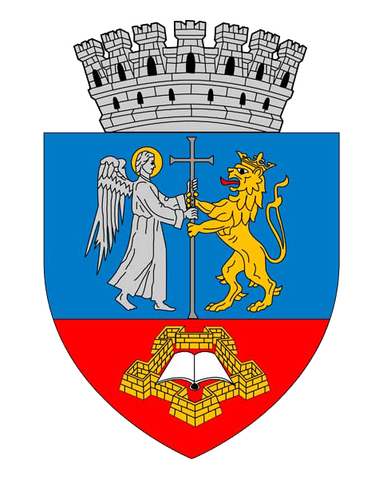

Oradea, mai demult Oradea Mare, (în maghiară Nagyvárad, în germană Großwardein, în idiș גרויסווארדיין Groysvardeyn, în latină Magnovaradinum, în slovacă Vel'ký Varadín, în turcă Varat, în italiană Gran Varadino) este reședința și cel mai mare municipiu al județului Bihor, situat în vestul României, pe râul Crișul Repede, în imediata apropiere a graniței cu Ungaria. Totodată Oradea este și cel mai important oraș din regiunea istorică Crișana. La recensământul din 2002 municipiul avea 206.614 de locuitori. Zona metropolitană, care include și 11 comune învecinate, avea în anul 2002 populația de 249.746 locuitori, dintre care 68.2% români, 28.7% maghiari ș.a.În perioada interbelică 20,6% din populația orașului era alcătuită din evrei, fiind consemnate de asemenea comunități de germani, slovaci, ucraineni etc. (vezi județul Bihor interbelic).
Stațiunile balneare Băile Felix și Băile 1 mai se află la o distanță de 8 km, respectiv 4 km de oraș. Pe lângă apele termale recunoscute pe plan internațional pentru efectele terapeutice, în această zonă se găsește o formațiune carstică spectaculoasă, mai exact, un aven cu o adâncime de 86 de metri, denumit în zonă "Craterul de la Betfia", precum și Pârâul Peța, cu o vegetație tropicală unică în Europa.
De secole, municipiul Oradea a reprezentat un punct important de referință pentru zonă, fiind cel mai important centru cultural și comercial. În Evul Mediu, în Cetatea Oradiei exista un observator astronomic, iar astronomii care lucrau acolo foloseau meridianul Oradei ca meridian de 0°.
Oradea (în latină Varadinum) este menționată pentru prima dată la 1113, într-o diplomă a abației benedictine din Zobor, în care apare numele episcopului Sixtus Varadiensis și al comitelui Saul de Bychar, însă rădăcinile sale sunt de origine romano-dacică, descoperirile arheologice atestând că în zona Salca din oraș și zona Băilor Felix erau stabiliți romani și daci. De-a lungul Evului Mediu, cetatea a devenit loc de conviețuire pentru un mozaic etnic care a contribuit la stabilirea componenței etnice de astăzi al Oradiei: români, maghiari, austrieci, slovaci, evrei, ruteni și turci.
Cetatea Oradiei, ale cărei vestigii se pot vedea și astăzi, este menționată întâia oară în 1241, cu ocazia efectuării unor reparații grabnice pentru a face față unui iminent atac tătaro-mongol.Construirea cetății este atribuită regelui Ladislau I (1077-1095), în onoarea căruia la 27 iunie 1191, Papa Celestin al III-lea emite un act prin care are loc sanctificarea regelui. Conform Cronicii Pictate de la Viena (Chronicon pictum Vindobonense), tot regele Ladislau I a fost cel care a hotărât să ridice "în locul numit Vărad", adică la Oradea, o mănăstire în cinstea Fecioarei Maria. Această mănăstire a constituit leagănul episcopiei romano-catolice de Oradea, al cărei întemeietor și patron spiritual a fost regele Ladislau I.
Invazia mongolă din 1241 a fost descrisă în "Carmen miserabile" de Rogerius, călugăr italian din Spalato, stabilit la Oradea, contemporan cu evenimentele.